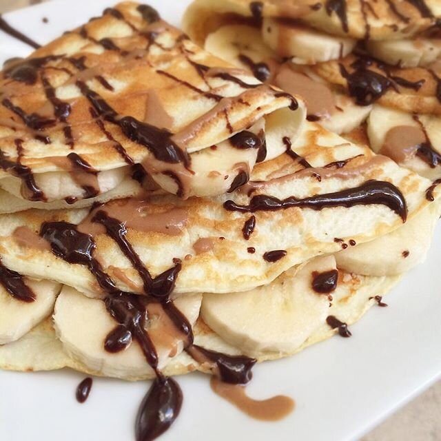

Protein Crepes & Life Taking Over

Bananas are very slowly but surely taking over my Instagram feed. Not even maddddd. Two big, yummy protein crepes filled with sliced banana & topped with a chocolate peanut butter drizzle, and sugar free chocolate. Maybe I should actually be concerned over the percentage of my meals that are made up of bananas + PB though. Mmmm nah.
I feel that I need to apologize for my lack of involvement on my blog. Life's been a little crazy. Mostly in regards to my last blog post 1) the main reason - I'm going through a long-term relationship break up, I just moved houses, and I'm taking care of a new 3 month old puppy. So I'm pretty busy. But also 2) I'm working on my next ebook to come out in October! Since most of my recipe development is going towards that, I don't have many recipes to share on Instagram and here.
Sooo yeah. The pup is getting better. He has learned to be quiet in his crate at night. He doesn't warn me when he needs to go to the bathroom though...and instead cries after he's had an accident in his crate. We'll figure it out though. It's a process. As for the move, I'm pretty settled into this house! It's about an hour from where I was before. In a month though, I move across the country to Washington state, live there for a month, then change houses one final time. Jeeeez. It's gonna be some crazy months but I'm up for it. I can't lie and say the breakup is easy... It's hard. It's especially hard learning to be self sufficient after being in a relationship for 5.5 years... A lot of loneliness and Netflix is involved. Netflix recommendations are much welcome.
Protein Crepes
Serves: 1
-
1 scoop vanilla quest nutrition protein powder
-
3/4 cup liquid egg whites
-
1/4 cup unsweetened almond milk
-
1/2 tsp baking powder
-
1 stevia packet
Blend all of your ingredients together!! Spray a larrrrge pan with nonstick spray - pour HALF the batter in. Cook on a low heat until the edges turn up slightly, flip, and cook another 1-2 mins. Repeat for the remaining half of the batter. 2 CREPEYS. They're yours. Eat them.